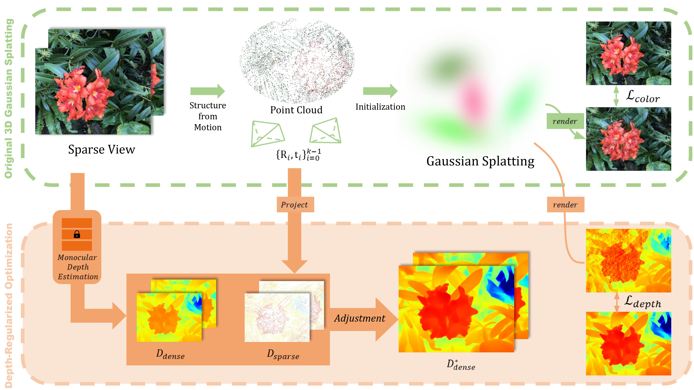

Depth-Regularized Optimization for 3D Gaussian Splatting in Few-Shot Images
Arxiv 2023
Computer Vision Lab, Seoul National University

Depth-Regularized Optimization for 3D Gaussian Splatting in Few-Shot Images
Arxiv 2023
Computer Vision Lab, Seoul National University

Abstract
In this paper, we present a method to optimize Gaussian splatting with a limited number of images while avoiding overfitting. Representing a 3D scene by combining numerous Gaussian splats has yielded outstanding visual quality. However, it tends to overfit the training views when only a small number of images are available. To address this issue, we introduce a dense depth map as a geometry guide to mitigate overfitting. We obtained the depth map using a pre-trained monocular depth estimation model and aligning the scale and offset using sparse COLMAP feature points. The adjusted depth aids in the color-based optimization of 3D Gaussian splatting, mitigating floating artifacts, and ensuring adherence to geometric constraints. We verify the proposed method on the NeRF-LLFF dataset with varying numbers of few images. Our approach demonstrates robust geometry compared to the original method that relies solely on images.
We optimize the Gaussian splatting using dense depth maps adjusted with the COLMAP point cloud. By incorporating depth maps to regulate the geometry of the 3D scene, our model successfully reconstructs scenes using a limited number of images.
Experiment Result (2-shot)
Experiment Result (2-shot)
3DGS (left) / Ours (right)
👆 Click and drag (navigate) / shift and scroll (zoom)
Additional Experiment: Precise Depth
Example results utilizing pseudo-GT depth (oracle). We confirm that the geometric cues provided by depth become significantly beneficial for the reconstruction in Gaussian splatting, especially when the number of images is limited. This fact is reaffirmed by the remarkably high performance of the oracle, which employs accurate geometry.

Citation
@article{chung2023depth,
title={Depth-Regularized Optimization for 3D Gaussian Splatting in Few-Shot Images},
author={Chung, Jaeyoung and Oh, Jeongtaek and Lee, Kyoung Mu},
journal={arXiv preprint arXiv:2311.13398},
year={2023}
}